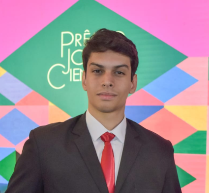

Isac Diógenes
Desenvolvedor Back-end & Cloud Engineer com foco em arquiteturas escaláveis e otimização de infraestrutura. Com mais de 3 anos de experiência transformando requisitos complexos em sisteas robustos, escaláveis e de alta disponibilidade.
Sobre Mim
Atuo no ciclo completo de desenvolvimento (SDLC) em projetos de P&D, com foco na construção de APIs RESTful utilizando Java, Spring Boot e Python. Tenho experiência prática na arquitetura de microsserviços e na implantação de soluções em nuvem (AWS), garantindo que o sistema seja não apenas funcional, mas economicamente otimizado. Minha trajetória é marcada pela entrega de sistemas do zero, unindo rigor técnico e visão analítica premiada nacionalmente.
Principais Conquistas
2º Lugar Nacional - Prêmio Jovem Cientista (CNPq)
Reconhecimento na maior premiação de inovação tecnológica do Brasil pelo desenvolvimento do ecossistema IoT Water Flow.
Otimização de Retenção e Operacionalidade
Implementação de soluções que atingiram 90% de operacionalidade em nuvem e elevaram a retenção de usuários em 15%.
Instrutor de Cloud Computing
Liderança de treinamentos técnicos para públicos com avaliação máxima (10/10).
Stack Tecnológico
Back-end
Cloud & Infra
Inovação & IA
✨ Vamos nos conectar!
Se sua empresa busca alguém com mentalidade de dono, base técnica sólida e experiência comprovada na entrega de sistemas de ponta a ponta, vamos conversar!